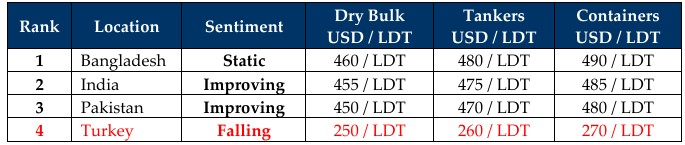

inWeekly Demolition Reports28/04/2025

As Team Trump finally concedes defeat and retreats on its tariff plans not only for the entire world, but also on China by confirmingthat the tariffs won’t be “anywhere near the 145%” as originally tweeted. And while some saw a semblance of sanity pervading through, others are now suspecting ‘market manipulation’ to help the 1% and the masses are calling on the SEC to investigate Trump’s actions during the week. As the drama played out, markets soared back only to start declining once again as the U.S. Treasury continues to see worrying trends of a massive sell-off of U.S. Dollars from various nations as faith in the financial stability of the U.S. starts to wane; but more importantly, a reported and ongoing sell-off of U.S. Treasury Bonds is causing a growing rift between the U.S. Treasury Secretary and the White House.
The flip flops from the White House are causing global markets to remain precarious too as freight and oil prices reversed course this week where charter rates jumped 1.5% by close of Friday while oil receded by over 1% ending the week at USD 63/barrel. Flip flops seem to be the theme of the week as OPEC+ countries too are reportedly seeing this week’s version of the future from the White House and advocating for an accelerated output through June, as having met with Pres. Zelenskyy during the revered Pope Francis’s funeral on Saturday, Trump commented that the Russia / Ukraine conflict now seems closer to reaching an agreement. Through it all, Team Trump’s trade stance against China remains firm and as Pres. Xi acknowledges this very fact, it remains a dire time for the rest of us, especially when, if at minimum, auto and medicinal trade, finances, stock markets, school / college and retirement savings are going to be affected moving forward. At the broader end, student & intellectual migration and global tourism will collectively start to degrade, especially when the safety of not only those visiting other countries but even in their home countries, where visitors collectively become victims of political differences, the world may have truly slipped past President Trump’s playful grip this week.
Although some momentum was generated in sub-continent markets over preceding weeks as the 90-day pause on tariffs was announced, ship recycling markets have remained cautiously stalled as the ambiguity around U.S. – China tariffs has maintained volatility on recycling nation steel plate prices & currencies, subsequently keeping vessel offerings & sentiments at the bidding tables, firmly in check. The ongoing restriction on issuing any No Objection Certificates (NOCs) in Bangladesh has also dragged on for another week, leaving Chattogram with no fresh arrivals even though some vessels did manage to find a way to delivery. Pakistan has disappeared into ‘Empty Port Position’ territory all while India’s recently firming prices have helped it have the busiest anchorage of the week with nearly 40K LDT idling at Alang. Lastly, Turkey at the West End looks like its bottom fell entirely out this week as levels across the board (offers and fundamentals) fell sharply.
Overall, as the supply of tonnage has yet to fully pick up as we head into the summer months and with Easter Holidays across Europe now over, charter fixtures remain solid and will likely continue to deprive recycling markets of some much-needed tonnage for yet another week. It’s already May 2025 next week folks!!

📄 Download PDF: Ship-recycling-market-insight-Week-17-04-25-2025-Precarious.pdfSource: GMS,Inc.https://www.gmsinc.net/gms_new/index.php/web